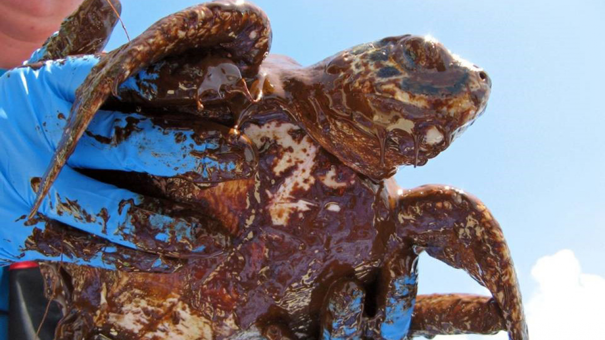

Polution is a huge problem in coastal communities due to the surrounding human population. Help is just one click away!
Oil spillage is another man made problem in our oceans that affects both coastal communities and marine life. Help is just one click away!

Due to problems such as polution and oil spillage our coral reefs are suffering.
Make An Impact!
Sign Our Petition 📢
Imagine a world where our oceans, once brimming with life and color, are now deteriating from litter. The ocean floor
slick with oil, and coral reefs vibrant color becomes absent. This leaves surrounding ocean life in danger.
The crisis beneath the waves is not a distant reality—it's unfolding now, affecting countless marine species
and coastal communities. The pandemic has magnified environmental inequities, starkly reminding us that the
stewardship of our seas is not a privilege but a collective responsibility. The evidence is irrefutable when 70% of our coral reefs are at risk, and
vital marine habitats become a graveyard of plastic waste. Just as internet access has become recognized as an essential service, the
health of our oceans is an indispensable lifeline for our planet. Thus, we stand before you, urging your
endorsement of an Oceanic Preservation Act, a charter that demands immediate action to cleanse our waters from
pollutants, strictly regulate activities leading to oil spills, and initiate large-scale projects to
rejuvenate our coral reefs. Sign our petition to be the voice for our oceans, advocating for their defense and protecting them, we preserve to have a balance of life on Earth.
🖊️ Eve from Laguna Beach supports this.
🖊️ Jake from Maui supports this.
🖊️ Finn from Coronado supports this.
🖊️ 3 people have signed this petition and support this cause.